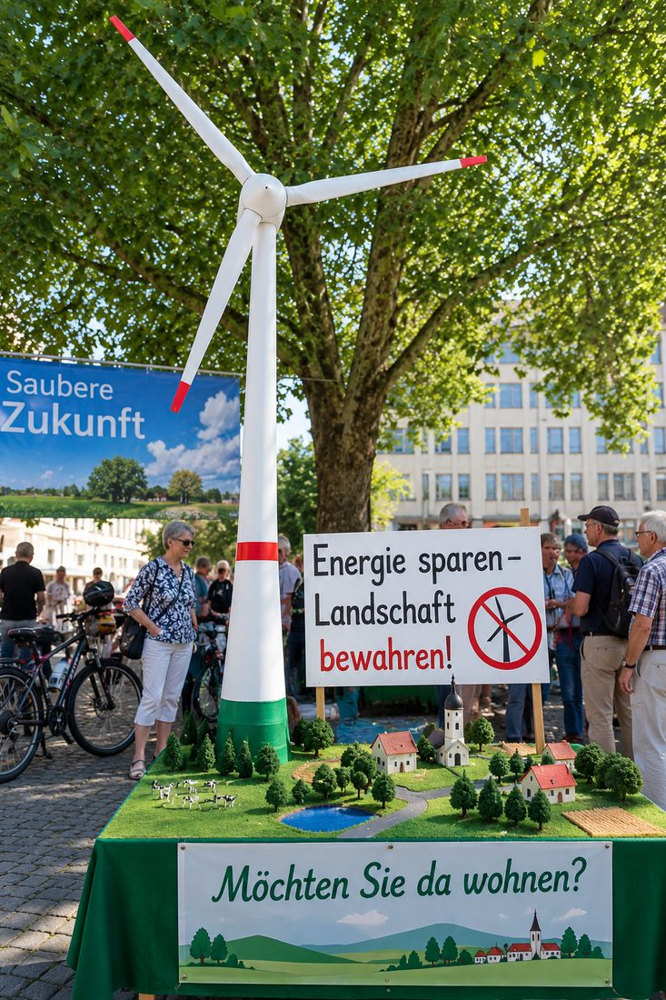
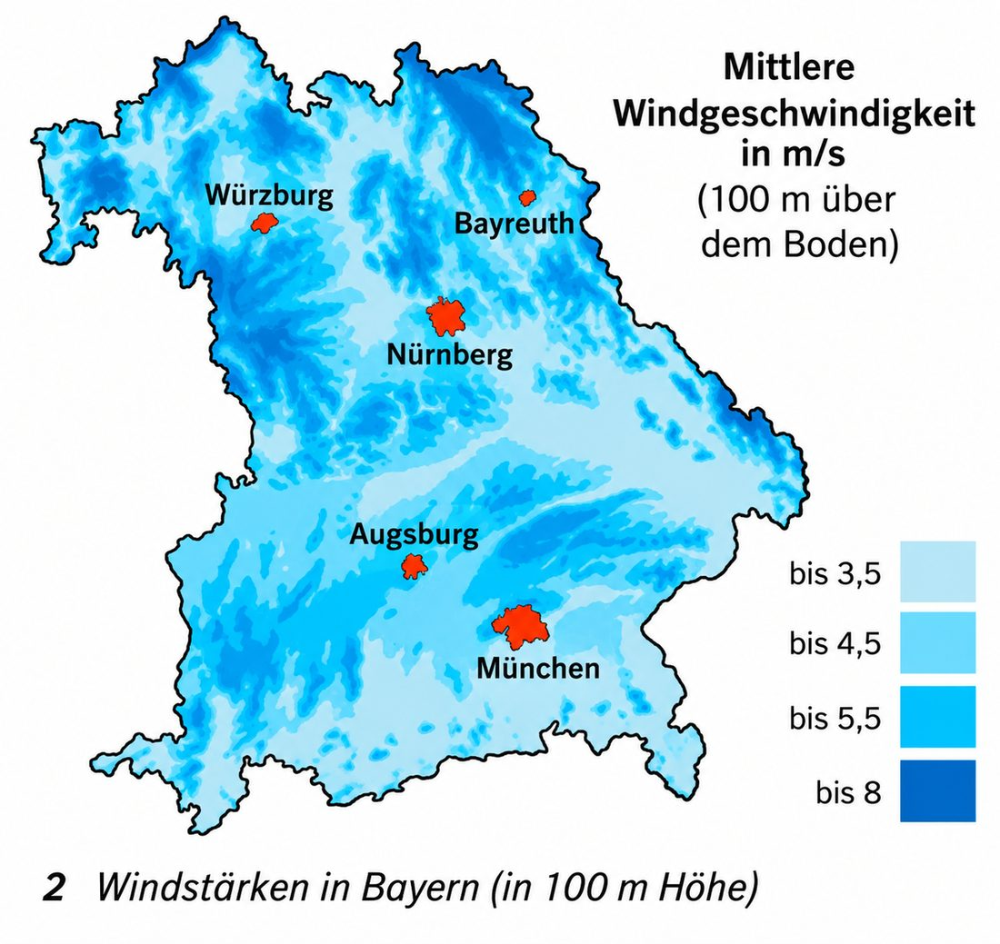

Windräder – ja oder nein?
Auf einem Marktplatz protestieren Menschen gegen Windkraftanlagen. Tippe auf die Punkte: Was wollen sie zeigen?

Wähle einen Punkt im Bild aus.
0 von 6 entdeckt
sind . Manche Menschen sind , andere . Beide Seiten haben Gründe. Solche Gründe nennt man .
Was meinst du – jetzt, bevor du mehr weißt?
Sollen in deiner Gegend neue Windräder gebaut werden?
Deine Stimme wird nur auf diesem Gerät gespeichert. Am Ende des Moduls stimmst du noch einmal ab.
👍 Was spricht für Windkraft?
Strom aus Windkraft ist eine Form der Energie.
- Im Betrieb werden keine Rohstoffe (Brennstoffe wie Kohle, Öl oder Gas) verbraucht.
- Es entstehen keine .
- Die Energieform ist : Wind wird nicht „verbraucht“, er entsteht in der Natur immer wieder neu.
- Jedes Kilowatt Strom aus Wind erspart klimaschädliches aus herkömmlichen Kraftwerken. Das hilft, die zu erreichen.
- Neue Windräder schaffen Arbeitsplätze in der Windkraft-Industrie.
Vergleiche in der Animation: Beide Anlagen erzeugen gleich viel Strom. Was verbrauchen sie – und was kommt heraus?
Tippe auf „Strom erzeugen“.
👎 Was spricht gegen Windkraft?
A · Der Wind weht nicht immer
Wind weht nicht immer dann, wenn man ihn braucht. Er liefert die Energie also nicht ständig und zuverlässig. Bei Windstille muss der Strom aus anderen Kraftwerken kommen oder vorher gespeichert werden.
Windkraftanlagen beginnen ab etwa 3 m/s Windgeschwindigkeit Strom zu liefern. Die größte Strommenge liefern sie bei etwa 12 m/s.
Spiele eine Woche ab: An welchen Tagen reicht der Windstrom für die Stadt?
Tippe auf „Woche abspielen“.
B · Schatten, Lichtreflexe und Geräusche
Anwohner beklagen sich über Geräusche der Anlagen. Die Rotorblätter „rauschen“ im Wind.
Steht die Sonne tief, werfen die drehenden Rotorblätter einen . Außerdem können die glatten Blätter das Sonnenlicht spiegeln (Lichtreflexe). Das kann Menschen nervös machen.
Stelle die Tageszeit ein. Wann flackert der Schatten im Zimmer? Links ist Osten (Morgen), rechts Westen (Abend).
Gut zu wissen: Deshalb gibt es Regeln. Fällt der Schatten zu lange auf ein Haus, muss die Anlage in dieser Zeit abschalten.
C · Landschaft, Vögel und Natur
Gegner der Windkraft kritisieren das gestörte : „Wie künstliche Spargelstangen ragen sie in die Höhe.“ Moderne Anlagen sind über 200 m hoch – höher als jeder Kirchturm.
Naturfreunde melden, dass in der Nähe von Windrädern häufig tote Vögel zu finden sind. Die Spitzen der Rotorblätter drehen sich sehr schnell. Vögel und Fledermäuse können sie nicht immer rechtzeitig erkennen. Manche fragen auch: Wie reagiert die Natur langfristig darauf?
D · Weht in Bayern genug Wind?
In hügeligen Landschaften ist die Windgeschwindigkeit meist niedriger als in flachen Regionen. Den meisten Wind gibt es an der Meeresküste oder direkt auf dem Meer. Dort baut man große . Aufwendig ist dann aber der Transport des Stroms dorthin, wo man ihn braucht – zum Beispiel nach Bayern.
In einem kann man nachsehen, wo in Bayern genug Wind weht. Tippe auf die Punkte in der Karte.

Wähle einen Punkt in der Karte.
0 von 4 entdeckt
E · Wie weit weg vom Haus?
Damit Anwohner nicht durch Lärm und Schatten gestört werden, müssen Windräder Abstand zu Wohnhäusern halten. Im Buch steht die bayerische Regel : Der Mindestabstand zu Wohngebäuden muss mindestens das 10-Fache der Anlagenhöhe betragen.
Befürworter sagen: Das schützt alle Bürger vor Nachteilen. Gegner der Regel sagen: Dann bleibt kaum noch Platz für neue Windräder.
Gut zu wissen: Seit 2022 gibt es in Bayern Ausnahmen. In manchen Gebieten, z. B. im Wald oder an Autobahnen, reichen 1000 m.
MERKE
- Windkraftanlagen liefern umweltfreundliche Energie ohne Abgase.
- Wind weht aber nicht ständig und zuverlässig, wenn man ihn braucht.
- Windräder stören das Landschaftsbild, gefährden Vögel und können unangenehm für die Anwohner sein.
Argumente sortieren
Zwei Personen streiten über Windkraft. Lies ihre Aussagen.
Die Frau ist gegen Windkraft: Ihre Argumente sind -Argumente. Der Mann ist für Windkraft: Seine Argumente sind -Argumente.
- Lies jede Aussage genau.
- Frage dich: Spricht sie für Windräder (Vorteil) oder dagegen (Nachteil)?
- Vorsicht bei Aussagen über Regeln: Die 10-H-Regel schützt die Bürger. Wer sie nennt, will zeigen, dass Windräder niemandem schaden – das ist ein Pro-Argument.
Sortiere die Aussagen nach „Pro“ und „Contra“
Tippe auf eine Aussage und dann auf die passende Spalte. Am Computer kannst du die Karten auch ziehen.
Deine Tabelle: Was ist dir besonders wichtig?
Markiere mit einem ⭐ die Aussagen, die du selbst für besonders wichtig hältst. Du kannst auch eigene Argumente dazuschreiben.
🔒 Die Tabelle erscheint, sobald du Aufgabe 1 richtig sortiert hast.
Eine Lösung finden: der Kompromiss
Wie könnte man eine Lösung des Problems finden?
MERKE
- Man muss versuchen, einen Kompromiss zu finden, der sowohl für die Gegner als auch für die Befürworter von Windkraftanlagen tragbar ist.
Ein heißt: Jede Seite gibt ein Stück nach. Vielleicht ist am Ende niemand ganz zufrieden – aber alle können damit leben.
Spiel es durch: Die Gemeinde möchte ein Windrad bauen. Wähle einen Standort (A bis E) und die Höhe. Drei Gruppen sagen dir ihre Meinung:
- 🏠 Anwohner wollen Ruhe, keinen Schatten und eine schöne Landschaft.
- 🐦 Naturschützer wollen Vögel und Wald schützen.
- ⚡ Energieversorger wollen möglichst viel Strom aus Wind.
Ziel: Finde einen Standort, bei dem keine Gruppe 😠 ist.
Tippe auf einen der Buchstaben A bis E.
Wie könnte man eine Lösung des Problems finden? ✨ KI prüft
⚔️ Duell gegen die KI
Jetzt wird diskutiert! Du vertrittst eine Seite, die KI die andere.
- Die KI bringt ein Argument.
- Du antwortest mit einem Gegenargument. Schreibe mindestens einen ganzen Satz.
- Die KI prüft, ob dein Gegenargument passt, und verteilt Punkte.
Du weißt nicht weiter? Tippe auf 💡 Tipp. Dann siehst du Ideen, was du sagen kannst. Schreibe sie in eigenen Worten auf.
Punkte: Überzeugendes Gegenargument = 2 Punkte für dich. Halb überzeugend = je 1 Punkt. Kein passendes Gegenargument = 2 Punkte für die KI.
Training für die Probe
Neue Aussagen – gleiche Frage
Diese Aussagen stehen nicht auf dem Arbeitsblatt. Kannst du sie trotzdem zuordnen?
Vervollständige den Text
Tippe zuerst auf eine Lücke, dann auf das passende Wort.
Pro und Contra
Tippe in ein Kästchen und schreibe. Tippst du ein Kästchen zweimal an, wechselt die Richtung. Schreibe ä als AE, ö als OE, ü als UE.
Kreuze an
Erkläre in eigenen Worten ✨ KI prüft
Schreibe ganze Sätze oder Stichpunkte. Die KI achtet nur auf den Inhalt, nicht auf die Rechtschreibung. Danach kannst du die Musterlösung ansehen.
Pro-und-Contra-Profi-Check
Hat sich deine Meinung geändert?
Sollen in deiner Gegend neue Windräder gebaut werden? Stimme noch einmal ab.
Wortspeicher
Alle Fachbegriffe dieses Moduls auf einen Blick.